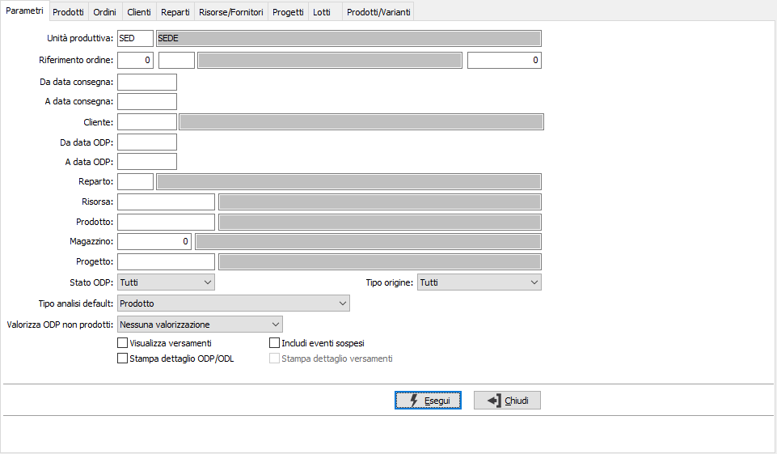
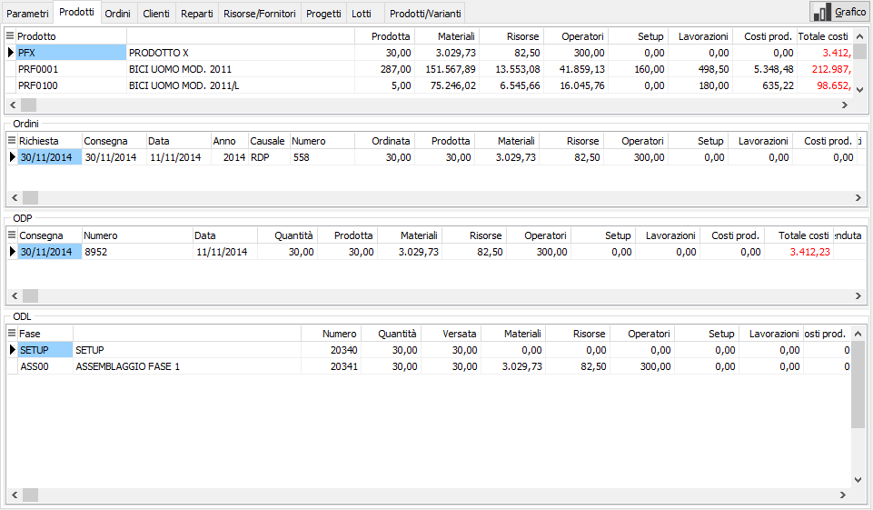
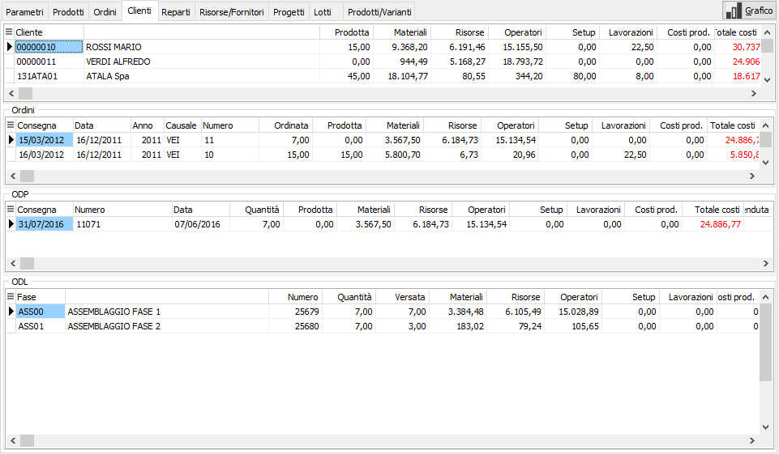
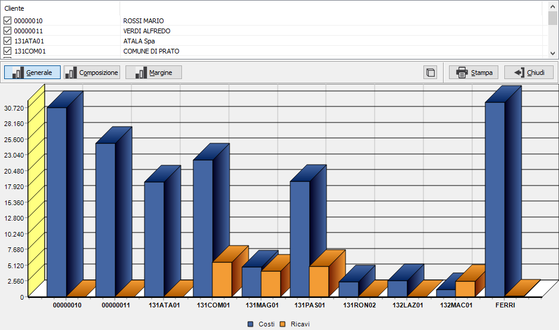
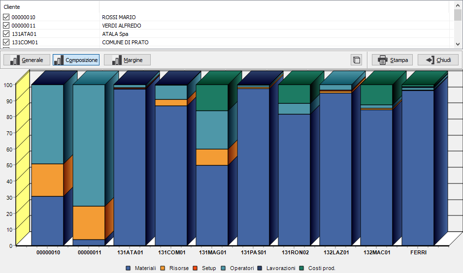
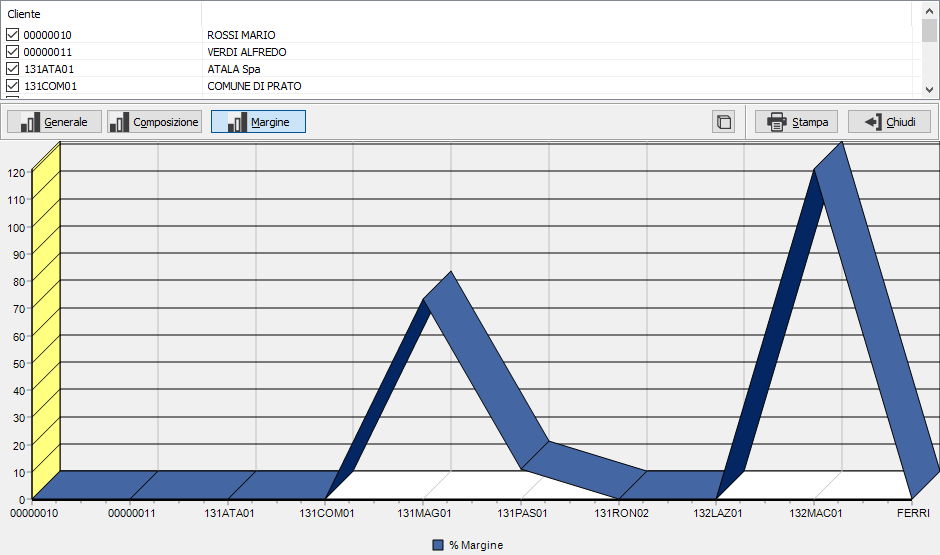

Raffronto economico
La funzione consente di analizzare secondo vari criteri (prodotto, progetto, ordine cliente, reparto, risorsa) le informazioni a disposizione e determinare il costo di produzione diretto, il ricavo generato ed il conseguente margine. I risultati possono essere visualizzati sia in forma numerica sia sotto forma di grafici.
Nei parametri viene richiesta l'unità produttiva con proposta l'unità produttiva di default valida per l'utente connesso ad OS1; è possibile solo scegliere l'unità produttiva, se gestite in configurazione le unità produttive multiple; sono presenti diversi criteri di selezione tra cui l'ordine del cliente, il periodo di consegna, il cliente, il prodotto ecc. è possibile selezionare gli ODP in base allo stato ed all'origine elaborando solo quelli che derivano da RDP a fronte di ordini o di reintegri/correttivi/manuali oppure tutti; è presente un parametro che consente di indicare il metodo di valorizzazione degli ODP che non sono stati prodotti, perchè il materiale era già disponibile, ma che comunque rientrano nel ciclo produttivo; spuntando la casella "Includi eventi sospesi" è possibile includere anche gli eventi che non hanno ancora generato un versamento di quantità per avere un’effettiva consuntivazione dei costi anche in assenza di versamento del composto; spuntando le caselle in basso è possibile indicare di aggiungere alla visualizzazione l'elenco dei versamenti ed in stampa il dettaglio ODL/ODP ed i versamenti stessi.
Premendo il pulsante Esegui si avvia l'elaborazione che porterà alla pagina selezionata tramite il parametro "Tipo analisi default".

Le varie pagine di analisi riportano i dati elaborati in raggruppamenti differenti consentendo una molteplice analisi dei dati; in tutte le analisi saranno presenti l'elenco degli ODP e degli ODL, l'elenco dei versamenti se spuntata la casella di visualizzazione nei parametri; nelle griglie in alto si alternano le informazioni relative al raggruppamento selezionato: nelle analisi per Risorse e Reparti sono presenti solo i riepiloghi dei costi, nelle altre analisi sono presenti anche i dati relativi alle vendite, al costo totale ed al costo del venduto con calcolo del margine; nell'analisi per prodotto, se previsto in configurazione un metodo di valorizzazione del costo, sarà presente anche la colonna "Costo previsto". I valori delle colonne calcolate risultano dai seguenti calcoli:
Totale costi: somma delle colonne Materiali, Risorse, Operatori,Setup, Lavorazioni.
Venduta e Tot. venduto: quantità e valore derivante dalle fatture.
Costo unitario: Totale costi / quantità Prodotta.
Costo del venduto: Costo unitario X quantità Venduta.
Margine (valore): Tot. venduto - Costo del venduto.
Margine (percentuale): ( Margine a valore - Costo del venduto ) / 100.
Su ogni pagina di analisi è disponibile la relativa stampa accessibile tramite i bottoni Anteprima e Stampa presenti sulla toolbar.


Nelle analisi per Prodotto, Cliente e Progetto è presente anche il pulsante per la produzione dei grafici; La finestra consente di selezionare i dati da includere nel grafico, prodotti, clienti o progetti in base a quale analisi si sta eseguendo, e tramite i pulsanti è possibile alternare i tipi di grafico disponibili: una rappresentazione che compara costi e ricavi, una che indica la composizione dei costi ed una che confronta i margini percentuali. Ogni grafico è visualizzabile in 3D o 2D e può essere stampato utilizzando gli appositi pulsanti.


